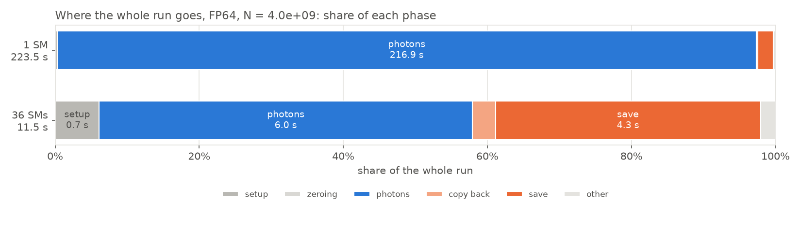
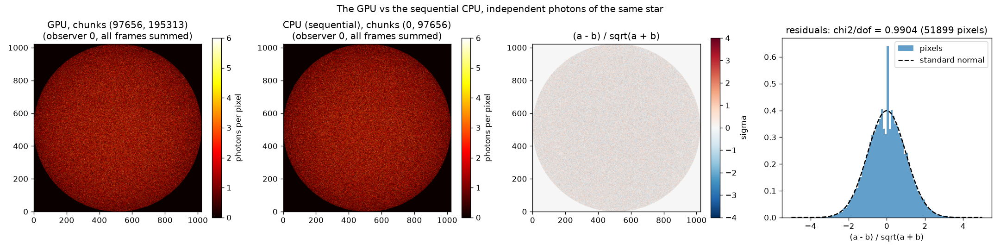
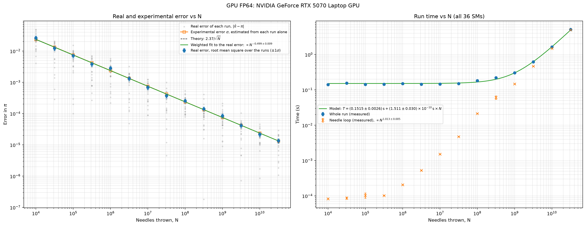
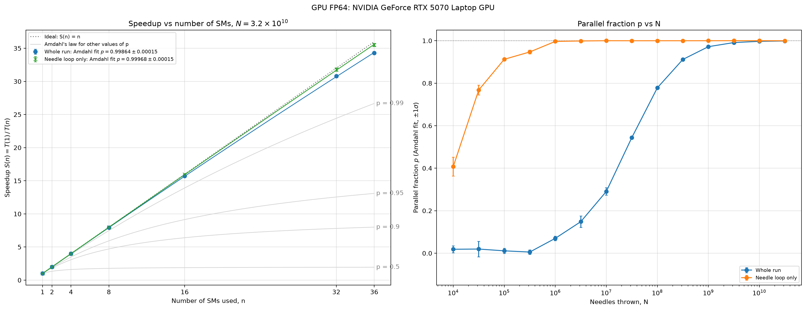
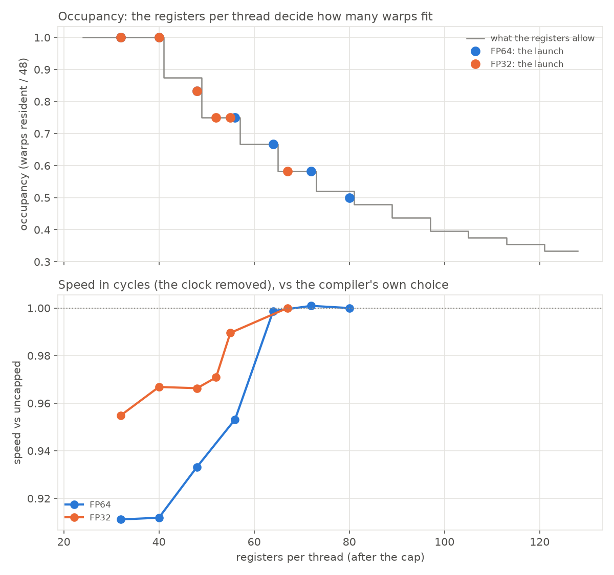
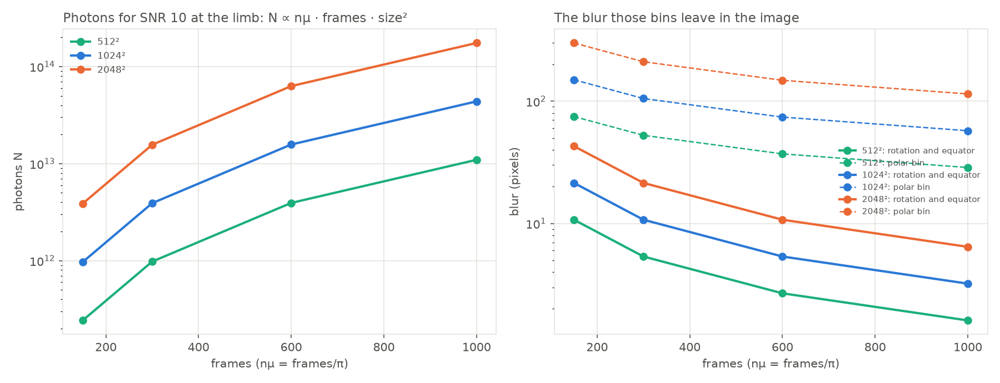
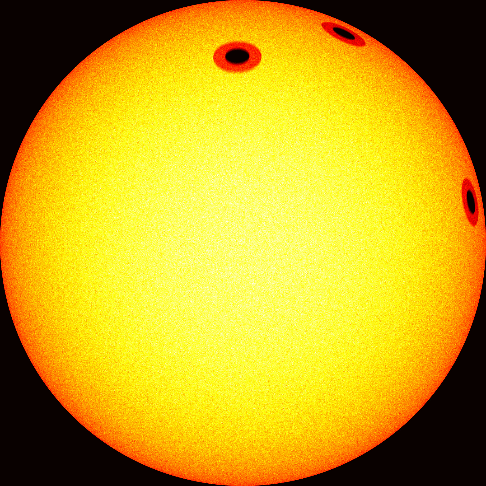

- GeForce 256: um pipeline fixo de gráficos
- cada pixel é calculado independentemente dos outros
- muitas unidades simples em vez de poucas unidades rápidas
CUDA: programando a GPU
e dois projetos: a agulha de Buffon (EP3) e a estrela manchada (EP4)
Roteiro
Cada conceito nasce de um problema (história), é explicado (fundamentos) e é medido num projeto (EP3, EP4).
O fio da aula: cada conceito, do problema à medida
| conceito | nasce (história) | é explicado | é medido |
|---|---|---|---|
| paralelismo de dados | 1999: pixels independentes | kernel, thread, bloco, grid | uma agulha, um fóton por iteração |
| o SM | 2006: G80 | o que há dentro de um SM | a unidade de toda aceleração: 1 SM vs n SMs |
| FP64 e o seu custo | 2008: Tesla, Fermi | bits, unidades separadas | 16× mais lento aqui; a A30 inverte |
| a hierarquia de memória | 2010: Fermi | registradores, constante, global | o fóton, a estrela, a imagem |
| cooperar custa | — | redução, sincronização, atômicos | contar agulhas; somar fótons na imagem |
| números aleatórios em paralelo | (Monte Carlo: EP1, EP3) | contador em vez de estado | a mesma imagem na CPU e na GPU |
| a energia como limite | 2022: exaescala | o clock não é fixo | FP32 em todos os SMs: 2730 MHz |
| Amdahl | (EP1, EP3) | a parte serial é o teto | EP3: o contexto; EP4: a imagem |
Cada parte de uma GPU responde a um problema que alguém teve. A história explica a arquitetura.
Ciência e indústria, juntas
CUDA é a plataforma desses últimos 20 anos, e provavelmente de boa parte dos próximos.
1999: milhões de pixels por quadro
O conceito: paralelismo de dados; vazão (throughput) em vez de latência
2001–2006: um programa por pixel, e os cientistas pegam carona
- shaders programáveis (GeForce 3, 2001): um pequeno programa roda uma vez por pixel
- GPGPU (BrookGPU, 2004): matrizes disfarçadas de texturas, resultados lidos como imagens
- funcionava, mas era preciso fingir que tudo era gráfico
Os conceitos: o kernel (um programa, muitos elementos); e por que faltava um modelo de programação de verdade
2006–2007: CUDA
- shaders unificados (G80, 2006): núcleos iguais, agrupados em multiprocessadores (SMs)
- CUDA (2007): programar a GPU em C, sem fingir que é gráfico
- o maior salto de uma geração para a outra: o mesmo chip servia aos jogos e à ciência
Os conceitos: host e device; o lançamento de um kernel; o SM
2008–2010: a ciência pede precisão e confiabilidade
- precisão dupla (FP64) no GT200 (2008); memória com correção de erros (ECC) e caches L1/L2 no Fermi (2010)
- FP32: 24 bits de mantissa; FP64: 53 bits
- unidades FP64 separadas: quantas, depende do mercado do chip
Os conceitos: precisão numérica; a hierarquia de memória
2012–2017: aprendizado de máquina
- AlexNet (2012): uma rede neural treinada em duas GPUs de jogos (GTX 580)
- redes neurais são produtos de matrizes: vazão pura
- tensor cores (Volta, 2017): unidades especializadas em produtos de matrizes
O conceito: um SM tem unidades diferentes: FP32, INT32, FP64, tensor
Hoje: exaescala, IA, e a energia como limite
- Frontier (2022): o primeiro supercomputador exaescala é uma máquina de GPUs
- o limite passou a ser a energia por operação
- no nosso laptop: com todos os SMs em FP32, o driver baixa o clock para caber na potência
Usos na ciência: transferência radiativa Monte Carlo (o EP4), N-corpos, clima, dinâmica molecular, IA
De extensão do C a ecossistema
O conceito: uma plataforma é mais que uma linguagem. É por isso que CUDA dura 20 anos.
3,9 trilhões de fótons em 6 minutos
- uma estrela com manchas, vista por 7 observadores
- imagem 1024², 300 quadros por rotação
- \(N = 3{,}9\times10^{12}\) fótons, SNR 10
- 6 min nos 36 SMs; 3,5 h em um SM
- em 2048²: \(1{,}6\times10^{13}\) fótons, 1 h 43 min no laptop · [A30: tempo]
Como?
main.py make --snr 10
Por que uma GPU tem milhares de núcleos simples, e o que há dentro de um SM.
CPU e GPU: latência contra vazão
O que há dentro de um SM
main.py measure → parts/occupancy.json (device), e os dados técnicos da NVIDIA
As nossas duas GPUs
| RTX 5070 Laptop | A30 (IAG) | |
|---|---|---|
| arquitetura | Blackwell (cc 12.0) | Ampere (cc 8.0) |
| SMs | 36 | 56 |
| por SM | 128 FP32/INT32, 2 FP64 | 64 FP32 + 64 INT32, 32 FP64 |
| registradores por SM | 65 536 | 65 536 |
| warps por SM, no máximo | 48 (1536 threads) | 64 (2048 threads) |
| FP64 : FP32 | 1 : 64 | 1 : 2 |
| memória | 8 GB | 24 GB |
qual das duas ganha em FP64? E em FP32?
Precisão numérica: FP32 e FP64
- na estrela, FP32 muda o pixel de 7,2·10⁻⁴ dos fótons: abaixo do ruído (0,14 por pixel)
- e é 16,2× mais rápido que FP64 no laptop (não 64×: veremos por quê)
main.py measure → parts/validation.json (precision)
Dois computadores com duas memórias; o trabalho é um grid de blocos de threads, executados 32 por vez.
Host e device: dois computadores, duas memórias
cudaMalloc: reserva memória na GPU ·cudaMemcpy: copia pelo PCIekernel<<<blocos, threads>>>(…): lança o kernel na GPU e volta na hora; a CPU segue__global__: roda na GPU, chamado pela CPU ·__device__: só na GPU ·__host__ __device__: nos dois
Um kernel mínimo, e o índice de cada thread
__global__ void soma(const float *a, const float *b, float *c, int n) {
int i = blockIdx.x * blockDim.x + threadIdx.x; // quem sou eu?
if (i < n) c[i] = a[i] + b[i];
}
soma<<<(n + 255) / 256, 256>>>(a, b, c, n); // blocos de 256 threads
O programa inteiro: o lado do host
float *a, *b, *c; // ponteiros do device
cudaMalloc(&a, n * sizeof(float)); // reservar na GPU
cudaMalloc(&b, n * sizeof(float));
cudaMalloc(&c, n * sizeof(float));
cudaMemcpy(a, a_host, n * sizeof(float), cudaMemcpyHostToDevice); // copiar para lá
cudaMemcpy(b, b_host, n * sizeof(float), cudaMemcpyHostToDevice);
soma<<<(n + 255) / 256, 256>>>(a, b, c, n); // lançar: volta na hora
cudaMemcpy(c_host, c, n * sizeof(float), cudaMemcpyDeviceToHost); // copiar de volta: espera o kernel
cudaFree(a); cudaFree(b); cudaFree(c); // liberar
Cinco passos, sempre os mesmos: reservar, copiar, lançar, copiar de volta, liberar. O lançamento não espera; a cópia de volta espera o kernel terminar.
Thread, warp, bloco, grid, e os SMs
um bloco de 768 threads tem quantos warps?
O modelo de memória
main.py measure → parts/kernel.json (resources: constant_bytes)
Copiar, lançar, executar, copiar de volta: e cada seta custa tempo.
O fluxo de execução
onde vocês esperariam que a parte serial de um programa de GPU se escondesse?
Quanto custa cada seta: a nossa estrela em 1024²

- em 1 SM, os fótons são 97% do tempo; em 36 SMs, só 52%
- salvar 5 GB leva ~4,3 s, com 1 SM ou com 36: calcular é barato; mover dados não é
main.py measure → figures/phases_fp64.png, parts/scaling.json (phases)
Uma instrução, 32 threads; cooperação dentro do bloco; e atômicos quando todos escrevem no mesmo lugar.
SIMT: uma instrução, 32 threads, e a divergência
Um if que divide o warp faz as duas metades esperarem uma pela outra: o warp gasta o tempo de a() mais o de b().
Redução paralela: somar N números
A redução em CUDA
__global__ void soma(const float *x, float *total, int n) {
__shared__ float parcial[256]; // memória do bloco
int i = blockIdx.x * blockDim.x + threadIdx.x;
parcial[threadIdx.x] = (i < n) ? x[i] : 0.0f; // distribuição
__syncthreads(); // todos escreveram
for (int passo = blockDim.x / 2; passo > 0; passo /= 2) { // combinação em árvore
if (threadIdx.x < passo)
parcial[threadIdx.x] += parcial[threadIdx.x + passo];
__syncthreads();
}
if (threadIdx.x == 0)
atomicAdd(total, parcial[0]); // um atômico por bloco
}
__syncthreads()só sincroniza dentro do bloco; entre blocos, só a memória global e os atômicos- a memória compartilhada é pequena (~100 KB por SM) e é dividida entre os blocos residentes
Quando todos escrevem no mesmo lugar: atômicos
O atômico é feito na cache L2, um endereço por vez. Muitos threads no mesmo endereço fazem fila; endereços diferentes andam em paralelo.
E se houver mais elementos que threads?
__global__ void soma(const float *a, const float *b, float *c, long long n) {
long long passo = (long long) blockDim.x * gridDim.x; // todos os threads do grid
for (long long i = blockIdx.x * blockDim.x + threadIdx.x; i < n; i += passo)
c[i] = a[i] + b[i];
}
- o grid-stride loop: um grid do tamanho da GPU, qualquer \(N\); a divisão é fixa
- no EP3 e no EP4 a divisão é dinâmica: cada thread pega o próximo pedaço de uma fila (
atomicAdd); quem termina antes pega mais
Ponte para o EP3
O Buffon conta quantas agulhas cruzam uma linha.Que operação é essa?
Uma redução: cada thread soma as suas agulhas em registrador, e um atômico junta tudo no fim.
Monte Carlo precisa de números aleatórios. Em paralelo, cada thread precisa dos seus, sem repetir os dos outros, e iguais na CPU e na GPU.
Quantos números, e por que importa
- Buffon: 2 por agulha (a posição, o ângulo)
- a estrela: 5 ou 6 por fóton (o ponto na superfície: 2; a direção: 3; a mancha: 0 ou 1)
- a imagem do gancho: \(3{,}9\times10^{12}\) fótons, ~\(2\times10^{13}\) números
Três exigências: qualidade (parecem independentes), independência entre threads (nenhum trecho repetido), reprodutibilidade (a mesma semente dá a mesma imagem, em qualquer processador).
O gerador clássico tem estado
Um contador em vez de um estado: Philox
- Philox4x32-10 (Salmon et al., SC 2011): f embaralha um contador de 128 bits com uma chave de 64 bits; a cada contador, 4 números de 32 bits
- f é uma bijeção: contadores diferentes nunca dão a mesma saída; passa na bateria BigCrush (TestU01)
- é o mesmo algoritmo na nossa CPU (código nosso) e na GPU (cuRAND,
curandStatePhilox4_32_10_t)
Uma rodada de Philox
10 rodadas; entre elas, a chave (k₀, k₁) = a semente soma constantes fixas. Só multiplicações de inteiros, XOR e trocas de lugar: tudo em INT32, idêntico em qualquer processador.
EP4/engine/random/rng.cuh (philox_round)
Um fluxo por pedaço de 1024 fótons
curand_init(seed, chunk, 0, &rng); // GPU: cuRAND
philox_init(seed, chunk, 0, &rng); // CPU: a nossa Philox (rng.cuh)
O pedaço, não o thread, escolhe os números. Então quem traça um pedaço (que SM, que thread, CPU ou GPU) não muda a imagem.
Como validamos os geradores: seis níveis
A saída real
$ engine/build/star_gpu64 --test-rng
PHILOX_TEST_0=PASS GOT=6627e8d5,e169c58d,bc57ac4c,9b00dbd8
PHILOX_TEST_1=PASS GOT=408f276d,41c83b0e,a20bc7c6,6d5451fd
PHILOX_TEST_2=PASS GOT=d16cfe09,94fdcceb,5001e420,24126ea1
SEED_42_CHUNK_0=9ceaf053,77f5493b,12bf50ad,5742b3d7,fcdb2127,53ba6cfd,838f5a6e,744e06fb
GPU_SEED_42_CHUNK_0=9ceaf053,77f5493b,12bf50ad,5742b3d7,fcdb2127,53ba6cfd,838f5a6e,744e06fb
GPU_RNG_CHUNK=0 BITS=SAME_AS_CPU UNIFORMS=SAME_AS_CPU
GPU_RNG_CHUNK=1 BITS=SAME_AS_CPU UNIFORMS=SAME_AS_CPU
GPU_RNG_CHUNK=1000003 BITS=SAME_AS_CPU UNIFORMS=SAME_AS_CPU
GPU_RNG_CHUNK=4294967301 BITS=SAME_AS_CPU UNIFORMS=SAME_AS_CPU
PHILOX_TESTS=PASS
As duas linhas do meio: os 8 primeiros números do pedaço 0, na CPU e na GPU. O pedaço 4 294 967 301 = 2³² + 5 passa do limite de uma palavra de 32 bits.
main.py test → "rng cpu", "rng gpu" (chama o engine com --test-rng)
Os números viram uniformes em (0, 1]
\(u_{\text{float}} = x\cdot 2^{-32} + 2^{-33}\qquad u_{\text{double}} = x\cdot 2^{-32} + 2^{-32}\)
- \(x\) é o inteiro de 32 bits do Philox; o resultado nunca é 0 e pode ser 1
- é a conversão do cuRAND; a nossa CPU repete a conta, e o nível 3 confere os bits
- limite conhecido: mesmo em FP64, há só \(2^{32}\) valores possíveis (passo \(2{,}3\times10^{-10}\)); para a estrela, muito abaixo do ruído
EP4/engine/random/rng.cuh (philox_uniform_float, philox_uniform_double)
O nível 6: fótons diferentes, a mesma estrela

- mesma semente, pedaços diferentes: CPU [0, 97 656), GPU [97 656, 195 313)
- resíduos \((a-b)/\sqrt{a+b}\) em blocos de 8×8 pixels: \(\chi^2/\text{gl} = 0{,}990\) com 51 899 graus de liberdade (−1,6σ)
main.py measure → validation/independent-gpu64/comparison.png, parts/validation.json
O EP3 como foi entregue: o problema, o código serial, a paralelização e Amdahl nos SMs.
EP3: a agulha de Buffon
- agulhas de comprimento \(L\) caem sobre linhas a distância \(D\)
- cruza se \(x \le \tfrac{L}{2}\sin\theta\)
- \(P(\text{cruzar}) = \dfrac{2L}{\pi D}\)
\(\pi \approx \dfrac{2 L\, n}{D \cdot \text{cruzamentos}}\)
EP3: o código serial
for (long long i = 0; i < n; i++) {
double x = uniform() * (D / 2); // centro → linha mais próxima
double theta = uniform() * (PI / 2);
if (x <= (L / 2) * sin(theta))
crossings++; // uma redução: contar
}
pi = 2 * L * n / (D * crossings);
Cada agulha é independente das outras: paralelismo de dados, como os pixels de 1999. Contar é uma redução.
EP3: o erro cai como \(1/\sqrt{N}\)

ajuste do erro real: \(\propto N^{-0{,}499\pm0{,}009}\) (teoria \(2{,}37/\sqrt{N}\)); tempo: \(T = 0{,}15\ \text{s} + 1{,}5\times10^{-10}\ \text{s}\times N\)
EP3/buffon.py → runs/…-gpu-fp64/error.png, summary.txt
EP3: paralelizar com threads persistentes e uma fila
Tantos threads quanto cabem nos SMs, lançados uma vez; cada um pega pedaços até acabar a fila. Quem acaba antes pega mais: o trabalho se equilibra sozinho.
EP3: o mesmo laço na GPU
__device__ unsigned long long count_crossings_in_chunk(long long chunk, ...) {
curand_init(seed, chunk, 0, &rng); // um fluxo Philox por pedaço
for (long long i = first; i < last; i++)
if (gpu_needle_crosses(precision, &rng))
crossings++; // resultado parcial, em registrador
return crossings;
}
__global__ void throw_needles(...) {
atomicAdd(counters.crossings, // combinação: um atômico por thread
take_chunks_until_none_left(...)); // pega pedaços da fila até acabar
}
EP3/buffon.cu
A lei de Amdahl, com SMs
\(S(n) = \dfrac{T(1)}{T(n)} = \dfrac{1}{s + p/n}\qquad\text{teto: } \dfrac{1}{s}\)
EP3: Amdahl nos SMs

em 36 SMs, quanto mais rápido?
\(N = 3{,}2\times10^{10}\) (FP64): 34,3× em 36 SMs, \(p = 0{,}9986\); a parte serial é 0,15 s: criar o contexto CUDA. \(p\) cresce com \(N\): 0,07 em 10⁶, 0,78 em 10⁸, 0,997 em 10¹⁰.
EP3/buffon.py → runs/…-gpu-fp64/amdahl.png, summary.txt
Um SM esconde a espera trocando de warp; quantos warps cabem é decidido pelos registradores; e mais warps nem sempre ajudam.
Esconder a espera trocando de warp
Mas isso só ajuda se a espera for latência. Se a unidade já está cheia (poucas unidades FP64, por exemplo), mais warps só fazem mais fila.
Os blocos vão inteiros para um SM, e em qualquer ordem
- um bloco só entra num SM se couber inteiro: os seus threads podem chamar
__syncthreads(), e então precisam estar todos vivos ao mesmo tempo - por isso, com 80 registradores, cabem 25 warps e lançamos 24: um bloco de 24 warps, inteiro
- os blocos rodam em qualquer ordem: um bloco nunca pode esperar outro
o bloco 0 escreve uma flag; o bloco 1 espera por ela. Funciona?
Os registradores decidem quantos warps cabem
\(\text{warps que cabem} = \dfrac{65\,536}{\lceil r/8\rceil\cdot 8 \times 32}\qquad\text{ocupação} = \dfrac{\text{warps residentes}}{\text{máximo}}\)
main.py measure → parts/occupancy.json (this_gpu, targets); a linha de lançamento de todo produto de GPU
O nosso lançamento, como o orquestrador o imprime
$ python main.py measure --plan
FP64: 80 registers per thread (they allow 25 warps per SM) → 768 threads per block × 1 block(s) per SM
= 24 warps per SM (blocks fit only whole), occupancy 0.50; 27 648 threads in all
FP32: 67 registers per thread (they allow 28 warps per SM) → 896 threads per block × 1 block(s) per SM
= 28 warps per SM, occupancy 0.58; 32 256 threads in all
- o tamanho do bloco vem da API de ocupação do CUDA (
cudaOccupancyMaxPotentialBlockSize), não de um número fixo no código - na A30 a mesma chamada escolhe outro lançamento: nenhum
ifpor GPU
main.py (test, make, measure): environment.show_launch
Threads persistentes: o padrão do EP3 e do EP4
cudaOccupancyMaxPotentialBlockSize(&grid, &threads_per_block, trace_photons, 0, 0);
cudaOccupancyMaxActiveBlocksPerMultiprocessor(&blocks_per_sm, trace_photons, threads_per_block, 0);
blocks = blocks_per_sm * sms; // exatamente o que cabe na GPU
cudaLaunchCooperativeKernel(trace_photons, blocks, threads_per_block, args, 0, 0);
__global__ void trace_photons(...) {
if (!is_allowed(sm_id(), sm_work)) return; // a máscara: só os n SMs escolhidos trabalham
take_chunks_until_none_left(...); // a fila: atomicAdd(&next_chunk, 1)
}
- o padrão: lançar só os blocos que cabem; o trabalho vem de uma fila, não do número de blocos (em Stanford, CS149, "persistent threads")
- o risco: o código supõe que todos os blocos rodam ao mesmo tempo, e CUDA não promete isso
- a garantia: o lançamento cooperativo falha, em vez de rodar, se os blocos não couberem todos juntos; então cada SM recebe exatamente os seus blocos, uma vez
- a medida: blocos num SM fora dos n escolhidos voltam na hora (
%smid); é assim que o EP3 e o EP4 medem Amdahl em 1, 2, …, 36 SMs
EP4/engine/gpu/gpu.cu (choose_launch, run_kernel, trace_photons)
Mais ocupação não é mais rápido (aqui)

main.py measure → figures/registers_and_occupancy.png
Por quê: tirar registradores custa instruções
| FP64, registradores | 80 | 72 | 64 | 56 | 48 | 40 |
|---|---|---|---|---|---|---|
| ocupação | 0,50 | 0,58 | 0,67 | 0,75 | 0,83 | 1,00 |
| bytes derramados | 0 | 0 | 24 | 84 | 164 | 344 |
| instruções | 1,000 | 1,015 | 1,035 | 1,070 | 1,090 | 1,131 |
| ciclos | 1,000 | 0,999 | 1,001 | 1,049 | 1,072 | 1,097 |
- antes de derramar: o compilador recalcula valores em vez de guardá-los (FP32 a 55 registradores, 0 bytes derramados: +4,7% de instruções, +1,1% de ciclos)
- depois: cada valor derramado é uma escrita e uma leitura na memória "local", que mora na memória do device, atrás da L1
- mais warps só pagariam se o SM ficasse parado esperando; aqui não fica
main.py measure → parts/occupancy.json (rows: instructions_vs_uncapped, spill_bytes, cycles_vs_baseline)
FP64 é 16× mais lento que FP32 aqui, não 64×
- o laptop tem 2 unidades FP64 por SM contra 128 faixas FP32: a razão de pico é 1:64
- medido: 16,2×, porque o kernel não é só FP64: o Philox, os índices, os bins são inteiros; senos e cossenos usam outra unidade
- o código FP64 tem 1 063
NOPs em 2 744 instruções: o compilador faz o warp esperar o resultado das poucas unidades FP64 - por isso a ocupação não ajuda em FP64: a fila é na unidade, não na memória
na A30 (32 FP64 por SM), FP64 deve custar quanto em relação a FP32?
main.py measure → parts/validation.json (speed_ratio), parts/kernel.json (instruction_mix); a leitura dos NOPs: research/nop_runs.py
E a A30?
- o mesmo código, compilado para ela: 96 registradores em FP64, 76 em FP32
- 21 de 64 warps: ocupação no máximo 0,33 (0,39 em FP32)
- mas FP64 rápido: a fila na unidade FP64 some, e a latência pode voltar a importar
| laptop | A30 | |
|---|---|---|
| ocupação, FP64 | 0,50 | [A30: medida] |
| registradores mais rápidos (varredura) | 72 (≈ sem limite) | [A30] |
| FP32 / FP64 | 16,2× | [A30] |
main.py measure --targets 80 → parts/occupancy.json (targets); na A30: main.py measure
O esqueleto do Buffon com outro corpo: a física da estrela, um fluxo por pedaço, atômicos numa imagem grande.
EP4: a estrela manchada
- uma estrela com escurecimento de limbo e manchas
- vista por observadores em várias inclinações
- cada quadro é uma fase da rotação
- o algoritmo é o do EP2 (CPU, sequencial); o EP4 o leva para a GPU
main.py make → observers_grid.mp4
A vida de um fóton
main.py measure → parts/kernel.json (sections: a parte do tempo de cada passo)
Do serial ao paralelo: o esqueleto do Buffon
__device__ void trace_chunk(long long chunk, ...) {
curand_init(work.seed, chunk, 0, &rng); // o mesmo fluxo do pedaço, na CPU e na GPU
for (long long photon = first; photon < end; photon++) {
long long pixel = trace_photon(&gpu_scene, &rng); // a física: a mesma função da CPU
tally_photon(pixel, image, &tallies); // atomicAdd num pixel da imagem
}
}
- a física é compilada para os dois (
__host__ __device__): uma só função, testada uma vez - a mesma fila de pedaços, os mesmos threads persistentes do EP3
- a diferença: o resultado não é um número, é uma imagem de 5 GB
Onde mora cada coisa
Constante em vez de global para a estrela: medido pela variante scene_in_global. Os atômicos em bilhões de pixels diferentes raramente fazem fila.
main.py measure → parts/kernel.json (resources, variants)
A validação da estrela, de volta à pirâmide
| teste | resultado |
|---|---|
| GPU vs CPU, mesmos fótons, FP64 | idênticas, bit a bit (10⁸ fótons) |
| GPU vs CPU, mesmos fótons, FP32 | 2,98·10⁻⁴ dos fótons mudam de pixel |
| GPU vs CPU, fótons independentes | \(\chi^2/\text{gl} = 0{,}990\) |
| FP32 vs FP64 | 7,2·10⁻⁴ dos fótons mudam de pixel (ruído: 0,14) |
| 1, 2, 9 e 36 SMs; qualquer divisão | a mesma imagem, byte a byte |
por que dois processadores diferentes podem dar os mesmos bits?
Os mesmos números aleatórios (níveis 1–3) e a mesma física. Em FP64, as contas da GPU podem diferir no último bit (FMA, a biblioteca matemática), mas um fóton quase nunca cai tão perto da borda de um pixel para isso importar: nenhum em 10⁸. Em FP32 alguns caem.
main.py test; main.py measure → parts/validation.json
Dois eixos de custo: resolução e tamanho


- resolução (quadros, bins de μ) → borrão e fótons: \(N \propto n_\mu\cdot\text{quadros}\cdot\text{tamanho}^2\); a 1024² e 300 quadros, ~11 px no equador, até 105 px no bin polar
- tamanho (pixels × quadros × observadores × 4 bytes) → memória e passes; cada passe traça todos os fótons de novo
main.py measure → figures/costs_compute.png, costs_memory.png, parts/costs.json
A mesma lei do EP3, outra parte serial: numa imagem de alta resolução, a parte serial é a própria imagem.
EP4: para onde vai o tempo
| FP64, \(N = 4\times10^{9}\), 1024² | 1 SM | 36 SMs | |
|---|---|---|---|
| fótons | 216,9 s | 6,0 s | 36,3× |
| preparar + copiar + salvar 5 GB + resto | 6,6 s | 5,6 s | ~1× |
| execução inteira | 223,5 s | 11,6 s | 19,3× |
antes da última linha: quanto deve dar a execução inteira?
A parte serial de uma imagem de alta resolução é a própria imagem.
main.py measure → parts/scaling.json (strong-fp64: phases, speedup_photon_phase, speedup_whole_run)
O teto de Amdahl

em verde, a mesma fase em ciclos: o clock sai da conta; à direita, o clock durante os fótons
main.py measure → figures/amdahl_ceiling_fp64.png
Quanto maior \(N\), mais perto do ideal

main.py measure → figures/costs_large_n.png, parts/costs.json (large_n)
A mesma lei, outra parte serial
| parte serial | \(p\) | 36 SMs | |
|---|---|---|---|
| EP3, Buffon | 0,15 s: criar o contexto CUDA | 0,9986 | 34× |
| EP4, estrela 1024² | 5,6 s: sobretudo salvar 5 GB | 0,974 | 19× |
com uma imagem 2048², a execução inteira escala melhor ou pior?
O laptop e a A30
| laptop (36 SMs) | A30 (56 SMs) | |
|---|---|---|
| fótons/s, FP32 | \(1{,}1\times10^{10}\) | [A30] |
| fótons/s, FP64 | \(6{,}7\times10^{8}\) | [A30] |
| FP32 / FP64 | 16,2× | [A30] |
| por SM por GHz, FP64 | [compare] | [A30] |
| todos os SMs vs um SM (FP64) | 36,3× | [A30] |
| execução inteira, 1024² | 19,3× | [A30] |
| a mesma imagem (FP64)? | [compare: digests] | |
main.py compare runs/measure/<laptop> runs/measure/<A30>
Uma comparação justa: a unidade é o SM
- "a GPU é 100× mais rápida que a CPU": uma GPU inteira contra um núcleo de um código sequencial
- é o erro clássico (Lee et al., ISCA 2010: "Debunking the 100X GPU vs. CPU myth")
- aqui: a GPU contra ela mesma, um SM e depois todos, com o mesmo código e o mesmo \(N\)
- a CPU serve para outra coisa: conferir que a GPU dá a resposta certa
- e sempre dizer contra o quê cada aceleração foi medida: fótons ou execução inteira, segundos ou ciclos
main.py measure → parts/speed.json (um SM e todos os SMs)
O resultado, o fio de volta, e como reproduzir cada número desta aula.
Mais fótons, imagem mais limpa: SNR \(\propto \sqrt{N}\)
1024², de \(10^9\) a \(10^{13}\) fótons · SNR na borda de 0,19 a 18,7, medida = prevista (dentro de 1%) · as manchas aparecem a partir de \(10^{10}\)
main.py make --ladder 1e9:1e13 --size 1024 → snr_ladder.mp4
A mesma estrela em 2048²

- \(N = 1{,}56\times10^{13}\) fótons, observador a 60°
- laptop: 93 min de fótons (\(1{,}1\times10^{10}\)/s), 1 h 43 min no total
- 4 passes: 20 GB de imagem não cabem em 8 GB
- SNR no centro 14,0 (prevista 14,1), na borda 11,7 (prevista 11,7)
- A30: 24 GB, 1 passe · [A30: tempo]
main.py make --size 2048 --snr 10 --observers 1.5708,1.0472,0.5236,0
O fio, de volta
- pixels independentes (1999) → o kernel → um fóton por iteração
- o SM (2006) → blocos inteiros por SM → a unidade de toda aceleração
- FP64 (2008) → unidades separadas → 16× aqui, [A30] lá
- a hierarquia de memória (2010) → o fóton, a estrela, a imagem
- cooperar custa → atômicos → uma agulha não espera outra
- números aleatórios em paralelo → um fluxo por pedaço → a mesma imagem na CPU e na GPU
- Amdahl → a parte serial → o contexto no EP3, a imagem no EP4
Três lições
- A GPU vence quando o trabalho são muitos pedaços independentes.
- Primeiro a correção: os mesmos bits na CPU e na GPU.
- Amdahl decide: ache a parte serial (o contexto, a imagem), meça a execução inteira e diga contra o quê cada aceleração foi medida.
Cada número desta aula sai de um comando
# EP4/ (o engine em C++/CUDA, orquestrado em Python)
python main.py test # ~20 s: o gerador, a GPU = a CPU, a divisão
python main.py make --snr 10 # as imagens e os vídeos, N escolhido pela SNR
python main.py measure # ~1,5 h: validação, velocidade, kernel, ocupação,
# escala, custos → relatório PDF
python main.py compare A B # duas máquinas lado a lado (o laptop e a A30)
- antes de rodar, cada produto confere o ambiente, prevê tempo, memória e disco, e só aceita \(N\) válido
- o EP3, como entregue:
python buffon.py
Obrigado!Perguntas?